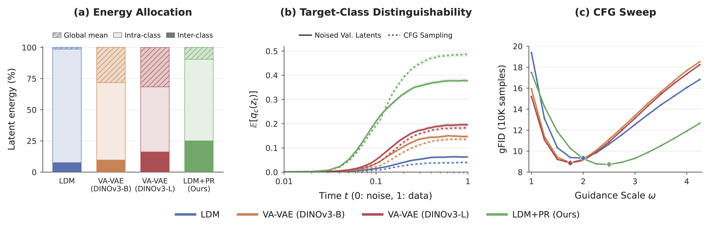

Beyond how easily the marginal distribution \(p_t(z_t)\) can be modeled, the guided score also depends on how conditions are arranged in the noise-corrupted latent space. Viewing conditions as discrete classes, we term this arrangement class geometry and ask which geometry works well with CFG.
Analysis
Separate centers, shrink spread.
Under a Gaussian class model, the oracle CFG correction contrasts the target class with its competitors. Larger inter-class separation and smaller intra-class spread make classes more distinguishable under noise. An ideal noisy-posterior objective captures this preference, with its gradient aligned with the correction.
Solution
Prototype Regularization.
The ideal objective cannot be optimized directly, since the latent space itself is being learned. We introduce Prototype Regularization (PR), a tractable surrogate that shapes class geometry with a prototype classifier on clean latents. It generalizes to cluster pseudo-labels, video latents, and continuous conditions.
Analysis
Why class geometry matters for CFG
Setup: rectified flow interpolates \(z_t=t\,z+(1-t)\,\epsilon\), \(\epsilon\sim\mathcal N(0,I)\), with noise at \(t=0\), clean data at \(t=1\).
1
What does CFG actually add?
CFG amplifies the displacement between the conditional and unconditional predictions. For the Bayes-optimal predictors \(v_c^\star=\mathbb E[v\mid z_t,t,C=c]\) and \(v_u^\star=\mathbb E[v\mid z_t,t]\), substituting \(v=(z-z_t)/(1-t)\) turns that displacement into a difference of posterior means of the clean latent:
The correction is how far knowing the class moves the estimate of the clean latent. To trace its dependencies, we need a model where it can be computed in closed form.
2
When is the correction large, and when does it vanish?
Take \(K\) classes with Gaussian priors \(p(z\mid c)=\mathcal N(z;\mu_c,\sigma^2 I)\) sharing one intra-class variance \(\sigma^2\). Writing \(q_j=\Pr(C=j\mid z_t,t)\) for the noisy class posterior, Eq. 1 becomes
class contrast \(\mu_c-\mu_j\)posterior weight \(q_j\)intra-class variance \(\sigma^2\)
The correction sums displacements from each competitor mean toward the target mean, weighted by that competitor's posterior \(\class{cw}{q_j}\) (i.e., how confusable it remains at the noisy state \(z_t\)). Once the target class dominates the posterior (\(q_c\to 1\)), all competitor weights vanish, and so does the correction.
3
Which geometry keeps classes distinguishable under noise?
Step 2 says the correction lives as long as the posterior is uncertain. How soon it becomes certain depends on how far apart classes remain once noise is added. Since \(p(z_t\mid c)=\mathcal N\big(z_t;\,t\mu_c,\,(t^2\sigma^2+(1-t)^2)I\big)\), the squared standardized distance between two classes is
To separate geometry from scale, fix reference means \(\mu_c^{\text{ref}}\in\mathbb R^d\) with \(\mathbb E_C[\mu_C^{\text{ref}}]=0\) and \(\mathbb E_C\|\mu_C^{\text{ref}}\|^2=d\), and vary only how a fixed total variance \(d\) is split:
Raising \(\alpha\) moves variance from intra-class \((1-\alpha)d\) to inter-class \(\alpha d\), pushing centers apart and shrinking intra-class spread. This increases \(\delta^2_{cj}(t)\) at every \(t\), making classes more distinguishable under noise, so the target posterior concentrates earlier.
Toy Example
Watch the correction appear and vanish
Setup: six Gaussian classes; the top one is the target. Both rows share the same samples and noise; only the geometry \(\alpha\) differs (Eq. 4). Distances are scaled to mimic a high-dimensional latent; for intuition only.
① Clean latentsTarget class highlighted. Larger α: farther-apart centers, smaller spread.
② Noised at tShade: target posterior \(q_c\). Arrows: \(g_c^\star\) on target samples, shared scale.
③ Along the trajectoryQuantities are averaged over all target samples. Dashed line marks the current t.
Entangledα = 0.001
Adjustable
Look for
Press play. With larger α, arrows are long while the class is uncertain, then vanish as the shade fills in. When entangled, arrows stay short and the shade fills only partially.
What it means
Under this model, CFG acts only while the class is uncertain. A separated geometry gives a stronger correction and settles the class earlier in denoising. PR is designed to build this geometry.
4
How do we turn this into a training objective?
To keep classes distinguishable under noise, we would ideally minimize the class uncertainty left at noise level \(t\), measured by the cross-entropy of the true noisy class posterior:
Holding the posterior function \(q_c\) fixed, the per-sample descent direction on the clean latent \(z\) is proportional to the oracle correction \(g_c^\star\):
To turn Eq. 5 into a practical training objective, we also need to choose how \(z_t\) is sampled. A natural choice follows the training trajectory: drawing \(t\) from a time distribution \(\rho\) gives \(\mathcal L_\rho=\mathbb E_{t\sim\rho}[\mathcal L_{\text{post}}(t)]\), with \(\rho\) ranging from the whole trajectory (uniform \(\rho\)) to clean latents only (\(\rho\) concentrated at \(t=1\)). Within the family of class geometries defined in Eq. 4, every \(\mathcal L_\rho\) is non-increasing in \(\alpha\), so all of them favor the same geometry: more separated and compact classes.
The objective is aligned with CFG at two levels: (1) its per-sample gradient follows CFG's correction (Eq. 6), and (2) minimizing any \(\mathcal L_\rho\) promotes the separated, compact geometry that strengthens CFG (Step 3). In practice, one then needs to choose \(\rho\) and approximate \(q_c\).
Method
Prototype Regularization
\(\mathcal L_\rho\) cannot be minimized directly: the true posterior \(q_c\) is defined by the latent distribution we are still learning. Since the diffusion model trains in the latent space fixed by the autoencoder, PR instead optimizes a surrogate during autoencoder training, with the following choices of \(\rho\) and an approximation of \(q_c\):
Clean-only supervision: PR directly regularizes the noise-free latents (i.e., it takes \(\rho\) as a point mass at \(t=1\)), so \(\mathcal L_\rho\) reduces to \(H(C\mid Z)\), the class uncertainty of clean latents.
A prototype classifier PR approximates the true posterior \(q_c\) with a softmax over cosine similarities to learnable class prototypes, mirroring the Gaussian class posterior with prototypes as class means.
More concretely, PR spatially pools the latent \(z\in\mathbb R^{d_c\times h\times w}\) to \(\bar z=\mathrm{AvgPool}(z)\in\mathbb R^{d_c}\), gives each class a learnable prototype \(p_j\in\mathbb R^{d_c}\), and normalizes both (\(\tilde z=\bar z/\|\bar z\|\), \(\tilde p_j=p_j/\|p_j\|\)):
With equal priors and equal-norm means, the clean Gaussian posterior is \(q_j\propto\exp(\mu_j^\top z/\sigma^2)\). PR adopts the same softmax form on normalized features, so its negative gradient mirrors Eq. 2:
Prototypes \(\tilde p_j\) replace class means \(\mu_j\), and classifier probabilities \(\pi_j\) replace posteriors \(q_j\): each latent is pulled toward its target and away from each competitor in proportion to its probability.
Three design choices make PR work in practice:
Clean-only supervisionSupervising all noise levels (uniform \(\rho\)) over-smooths the latent's spatial variation. Supervising only clean latents avoids this and performs best.
Pool before classifyingPR only regularizes the pooled latent \(\bar z\), keeping \(z - \bar z\) free to encode spatial variation needed for reconstruction (i.e., layout and detail).
Cosine, not linearA linear classifier can lower the loss by inflating latent norms instead of separating classes; normalization rules out this shortcut.
where \(\lambda_{\text{PR}}\) is set adaptively by balancing encoder last-layer gradient norms against the reconstruction term. PR shapes the latent geometry from a partition of the data, which can come from class labels or cluster pseudo-labels. The diffusion model can later be conditioned on other signals, discrete or continuous.
Class geometry governs how much a model gains from guidance
Setup: ImageNet 256×256 on the VA-VAE codebase, using a convolution-based autoencoder with 32×16×16 latents, LightningDiT-XL/1, 20 epochs for VAE and 80 epochs for DiT. Guided numbers use the best guidance scale \(\omega^\star\) from a 5K-sample sweep; metrics evaluated over 50K samples.
Main comparison
Method
Purity@10 ↑
Steps/s ↑
gFID w/o CFG ↓
gFID w/ CFG ↓
IS ↑
Recall ↑
LDM
0.020#4
2.16
13.09#4
3.31#4
237.73
0.504
VA-VAE (DINOv3-B)
0.053#3
1.65
9.76#2
2.64#3
236.02
0.557
VA-VAE (DINOv3-L)
0.071#2
1.61
9.01#1
2.44#2
242.17
0.564
LDM + PR (Ours)
0.279#1
2.13
11.59#3
2.28#1
269.85
0.585
Reconstruction is comparable.rFID 0.277 vs. 0.308 (LDM) and 0.275 (VA-VAE, DINOv3-L); PSNR within 0.15 dB and LPIPS within 0.002 of the best.
Guided ranking follows Purity.Purity@10, the share of a latent's 10 nearest neighbors that share its class, ranks methods as guided gFID does; unguided gFID does not.
Negligible overhead.Stage-1 throughput stays at 2.13 steps/s (LDM: 2.16), while VA-VAE's representation alignment costs about 25%.
Why does PR gain more from guidance?

(a) Energy shifts to inter-class variance.Over 90% of LDM's energy is intra-class. VA-VAE shifts much of it to a shared global mean; PR moves it to inter-class variance.
(b) The class stays identifiable under noise.PR's target posterior is substantially higher along the trajectory, on noised validation latents and actual CFG samples, consistent with Step 3.
(c) It benefits from stronger guidance.PR peaks at a larger \(\omega^\star\) and degrades more slowly beyond it, giving a wider near-optimal range of guidance scales.
Is it really the geometry? Transplanting class centers into LDM
Replace each LDM class center with a reference one, \(z'=z-\mu_c^{\text{LDM}}+\mu_c^{\text{Ref}}\), keeping intra-class deviations, then retrain stage 2. References are PR centers or norm-aligned random directions.
gFID@50K ↓
Share of PR's gain recovered
Latent
Centers
Shape
w/o CFG
w/ CFG
\(\omega^\star\)
w/o CFG
w/ CFG
LDM + PR
native
11.59
2.28
2.5
100%
100%
LDM
native
13.09
3.31
2.0
0%
0%
LDM
LDM, rescaled
32×16×16
12.58
2.89
2.0
34%
41%
LDM
PR
32×16×16
12.79
2.63
3.5
20%
66%
LDM
PR
32×1×1
12.65
2.52
4.0
29%
77%
LDM
random dirs, PR norms
32×1×1
13.74
3.16
4.5
−43%
15%
Share recovered = (LDM − row) / (LDM − LDM+PR), computed from the gFID columns. All spaces using PR's centers or norms reach a larger \(\omega^\star\) than LDM.
Arrangement, not energy alone.At matched energy, PR centers beat LDM's own centers (66% vs. 41%, full shape) and random directions (77% vs. 15%, pooled).
A global channel offset.Pooled centers beat spatially resolved ones (2.52 vs. 2.63), so the useful class signal is mainly a channel-wise offset.
Intra-class spread matters too.Transplants recover most of the guided gain but little of the unguided one; they move centers and leave intra-class spread untouched.
Does PR generalize?
Cluster pseudo-labels
2.34Guided gFID with DINOv3-L clusters as PR labels, achieving 94% of the GT label gain
PR is applied with spherical K-means clusters (K = 1000) of DINOv3-L [CLS] tokens; the PR labels need not match the stage-2 condition.
PR labels (stage 1)
Condition: ground truth
Condition: DINO clusters
None
3.31 / 13.09
3.58 / 13.31
Ground truth
2.28 / 11.59
2.42 / 11.82
DINO clusters
2.34 / 11.44
2.55 / 11.47
Guided / unguided gFID.
Video latents
152.7 → 140.1FVD with CFG on UCF-101
LeanVAE fine-tuned with PR (pooling over time and space), then Latte-XL/2 fine-tuned on top. Without CFG, FVD drops 287.3 → 275.7; action accuracy stays on par.
w/ CFG
w/o CFG
Stage 1 / Stage 2
FVD ↓
Acc ↑
FVD ↓
Acc ↑
Official / Official
167.0
92.9
340.2
87.2
Official / Fine-tuned
161.4
98.5
302.0
92.7
Recon only / Fine-tuned
152.7
99.0
287.3
93.0
PR / Fine-tuned
140.1
98.9
275.7
93.0
Continuous Conditions (Text-to-image)
2.90 → 2.35gFID (val) with CFG, conditioned on CLIP-L text embeddings of image captions
PR is best on every guided metric. PR shapes latent geometry with categorical labels (e.g., GT labels, DINO clusters), yet beats continuous-alignment baselines.
w/ CFG
w/o CFG
Method
gFID train ↓
gFID val ↓
CLIP ↑
gFID train ↓
gFID val ↓
CLIP ↑
LDM
3.15
2.90
0.2775
10.38
7.52
0.2577
VA-VAE (DINOv3-L)
2.53
2.67
0.2814
8.02
5.65
0.2620
Cos. align (CLIP-L)
2.93
3.04
0.2799
9.52
6.84
0.2590
Cos. align (DINOv3-L)
2.86
2.78
0.2784
9.35
6.74
0.2585
PR (GT labels)
2.51
2.35
0.2811
9.63
6.87
0.2570
PR (CLIP-L clusters)
2.52
2.42
0.2813
10.15
7.36
0.2578
PR (DINOv3-L clusters)
2.53
2.46
0.2818
9.41
6.72
0.2575
Discussions
Unguided gap. PR primarily targets guided generation. Without CFG, PR beats the LDM baseline but trails VA-VAE. This gap may stem from pooling, which leaves spatial structure unregularized. Because of this, PR can be combined with other regularizers: adding PR to VA-VAE improves both guided and unguided generation.
Scope of analysis. The link between the posterior gradient and the Bayes-optimal CFG correction holds for any latent distribution under Gaussian forward corruption. The closed-form correction and its predictions are specific to the Gaussian class model, though PR still lowers posterior uncertainty on real latents as predicted.
Design space. PR is one instantiation of the posterior objective, using clean-latent supervision and a pooled prototype classifier. Clean-latent supervision avoids the over-regularization of noisy supervision, while other time distributions and contrast forms remain open for exploration.
BibTeX
@article{placeholder2026guided,
title = {Learning to Be Guided: Shaping Latent Geometry
for Classifier-Free Guidance},
author = {One, Author and Two, Author and Three, Author and
Four, Author and Five, Author and Six, Author and
Seven, Author},
journal = {arXiv preprint arXiv:XXXX.XXXXX},
year = {2026}
}